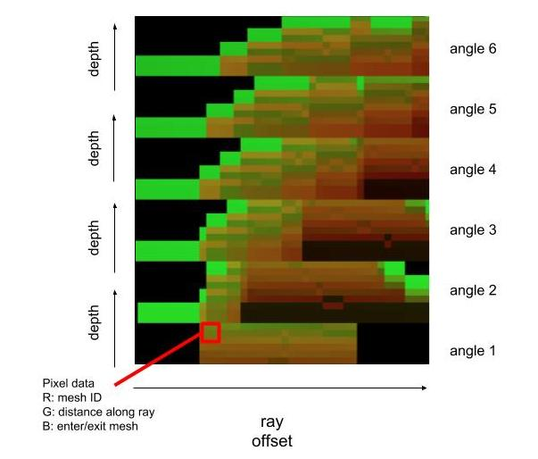

Abstract
Real-time global illumination remains an unsolved problem in high-fidelity graphics. Traditional raytracing (i.e. pathtracing) casts rays from the camera into the scene. This becomes prohibitively expensive as the number of ray bounces grows. Dependencies between rays and the high cost of testing intersections also make raytracing difficult to parallelize on a GPU. Photon mapping, which casts rays from light sources, faces the same problem. We attempt to resolve these problems in a 2D web application using shader-based radiosity with parallel ray-bundling. This algorithm can utilize the GPU more effectively by casting rays in parallel bundles. By calculating all potential intersections in a single render pass, we hoped it would be possible to achieve real-time 2D global illumination. However, we eventually discovered that our chosen platform, WebGL, presented intractable technical barriers to indirect lighting and high-fidelity real-time performance. Nevertheless, this project served as a valuable exploration of shader programming.
Technical Approach
Background
One of the main problems with Monte Carlo rendering is that similar rays become scattered and incoherent after first colliding with the scene, limiting its ability to parallelize on the GPU. Mortensen, Khanna, and Slater first proposed an atlas-based representation of a scene's light field to achieve global illumination [Mortensen, Khanna, Slater 2007]. After casting parallel rays into the scene from many different angles and storing intersections in a texture atlas, one can calculate irradiance at a location with a fast recursive lookup.

|

|

|
To speed up this technique, Hermes et al. proposed using the GPU's depth-buffer to sort intersections [Hermes et al. 2010]. While this approach could reduce in-production render times for 3D scenes to a matter of hours, a 2D implementation by Thomas Diewald claimed to achieve real-time performance on commodity hardware (unfortunately without any documentation or released software). However, all implementations using the GPU depth-buffer algorithm rely on a feature - atomic counters - which has been compromised by the Spectre vulnerability. While it is still possible to create desktop OpenGL applications using atomic counters, all major web browsers now prohibit atomic WebGL calls. We saw an opportunity to implement parallel ray-bundling without this software vulnerability, by using the atlas-based representation first proposed by Mortensen et al.
Implementation
We initially attempted to calculate intersection points by raymarching across a signed distance field. However, we found that blind raymarching could not find intersections beyond the first, since the distance becomes stuck at zero. Due to the prohibitive cost of conditional branches in shaders, it was not possible to remove those meshes which the ray had already intersected.
To reach real-time performance, our algorithm must break down into small, parallel tasks that can be written into shader programs that run on the GPU. However, the GPU must also read in scene objects every frame (since defining objects entirely in the shader would limit interactivity). Therefore we use Three.js meshes as our scene objects and calculate lighting solutions based on their current size and position.
Collecting Mesh Information
To read mesh information into the shader, we tried recompiling the shader every frame, encoding mesh information as a sampling texture, and passing each mesh into the shader as individual uniforms. These were either too slow or limited by hardware constraints. However, by using a feature newly introduced in WebGL2 - uniform buffer objects - we may be able to send to the GPU thousands of bytes containing uniform data.
Calculating Parallel Ray Intersections
The first shader in our render pipeline, the intersection shader outputs a fixed-size texture containing carefully encoded data. We define the x-axis as the index of the parallel offset. This means that horizontally adjacent pixels correspond to adjacent rays, with x=0 being the right-most ray and x=isectWidth being the left-most ray (relative to whichever angle they were cast from). We divided the y-axis into chunks for each angle, with the height of each chunk being the maximum number of intersections each ray can record. The R, G, and B color values of each pixel contain each intersection's meshId and distance along the ray. This lets us quickly determine how far away it is from a point on the same ray and which mesh to lookup for lighting information.
|

|

|
Observe that the intersect buffer has a horizontal striped pattern. This is because parallel rays tend to have similar intersection depths until they enter or exit a mesh. Indeed, we see each mesh forms a vertical pattern, because rays from many angles hit them at gradually differing offsets.
Calculating Light For Each Bounce (Not Yet Implemented)
Once we have calculated the intersection of those rays with all of the meshes and stored it in our intersect buffer, we are able calculate the radiance for all of the scene and reflect that on the lights and shadows shown on the ground. For each pixel, we iterate through each angle. In each angle, we determine the ray passing through that pixel and find the two closest intersections (if they exist). If either of these intersections corresponds to a light-emitting mesh, we calculate the resulting irradiance at the pixel relative to its distance from the intersection. We add together all the irradiances and divide the sum by the number of angles. This should give us direct lighting.
For indirect lighting, we can use the same algorithm on the intersection points themselves, finding which rays emit onto them. This will probably be a separate render pass, so as to avoid dependency issues between bounces.
Additional Features
Basic UI
We built the basic UI components necessary to load meshes from a template and insert additional meshes.
Drag and Drop
We added the ability to drag and drop meshes to allow for interaction with the scene. This feature will help demonstrate the live aspect of our project once we start calculating the light for each bounce.
Physics
We used Matter.js, which is a 2D physics engine. We integrated this physics engine with THREE.js. This allows us to run a physics world, that we can then rasterize onto the screen. So far, we have implemented two primitive types: rectangles and circles. We initialize our physics world in our init() function, and then at every render cycle we ask the physics engine for the new coordinates and rotation of all the shapes.
2D Distance Fields
We initially attempted to calculate intersection points by raymarching across a signed distance field. However, we found that blind raymarching could not find intersections beyond the first, since the distance becomes stuck at zero. Due to the prohibitive cost of conditional branches in shaders, it was not possible to remove those meshes which the ray had already intersected.
Results
References
- J. Hermes, N. Henrich, T. Grosch, and S. Mueller, "Global Illumination using Parallel Global Ray-Bundles," Vision, Modeling, and Visualization, 2010.
- J. Mortensen, P. Khanna, and M. Slater, "Light Field Propagation and Rendering on the GPU," The Association for Computing Machinery, 2007.
- T. Hachisuka, "High-Quality Global Illumination Rendering Using Rasterization," in GPU Gems 2, Matt Pharr, Ed., 2005.
- Y. Tokuyoshi, T. Sekine, and S. Ogaki, "Fast Global Illumination Baking via Ray-Bundles," THe Association for Computing Machinery, 2011.
- A. Thomsen and K. H. Nielsen, "Approximate Radiosity Using Stochastic Depth Buffering," Journal of Graphics, GPU, and Game Tools, 2011.
- The blog of Thomas Diewald
- The blog of Benedikt Bitterli